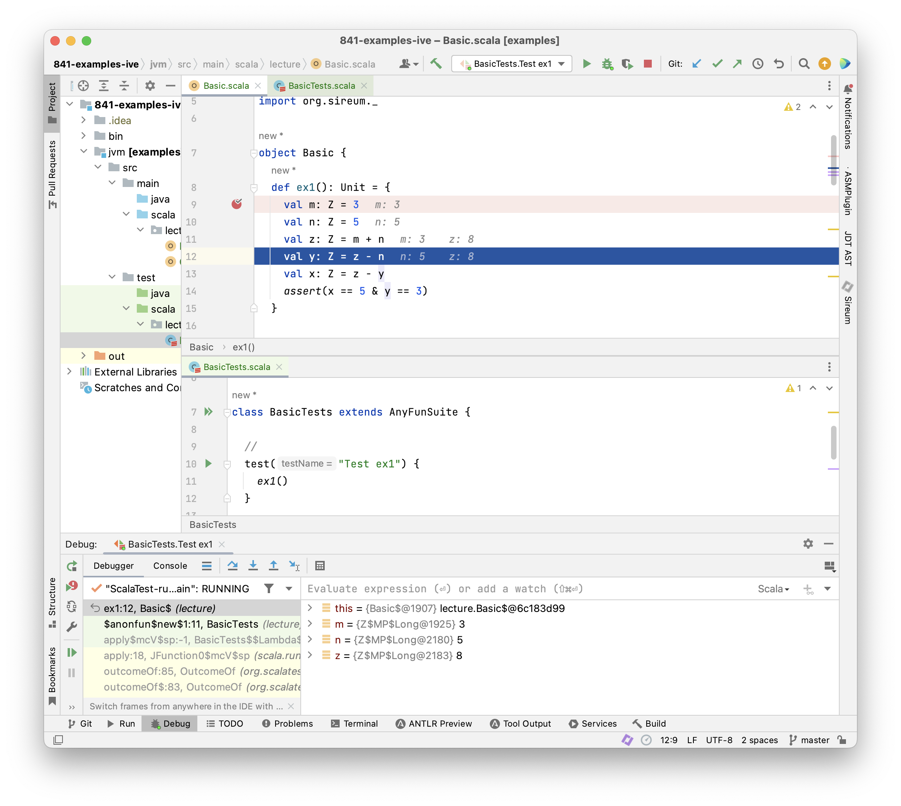

Lecture Summary: Tracing Facts
Tracing Values
Execution as Calculation
A common way to reason about a program is to trace its execution and try to determine the values of variables at different in the execution. The simplest approach that students follow when learning to program is to add some “print” statements to code to print out the values of variables at certain points. Later, one learns how to use a debugger – which can show the current values of variables without having to add explicit “print” statements in the code. Once we become experienced programmers, we may often use a debugger, but it is second-nature for us to look at code and predict the possible values of variables at specific points. When looking for potential errors, we often imagine the “correct” or “desired” or “expected” values of variables and then look for possible deviations (e.g., with “print” statements or with the debugger). In other words, we calculate “in our heads” expected values and compare them to those produced by program execution. We can follow a similar approach directly without executing a program: we can state expected values by asserting them and compare them to those produced by calculation. Looking at a series of examples will help us tie together some basic relationships between our natural intuitions, automated program verification, and testing.
Example: Execution as Calculation
1val m: Z = 3
2val n: Z = 5
3val z: Z = m + n
4val y: Z = z - n
5val x: Z = z - y
6assert(x == 5 & y == 3)
The code fragment above initialises variable m to 3 and variable n to 5. At the end, it asserts that variable x equals 5 and variable y equals 3.
We now construct a “mental trace” of the program. We state in interspersed comments the variable values that we deduce (calculate “in our heads”), e.g., using comments like the following..
// deduce v == e & w == f & ...
…which indicate that we deduced variable v has value e, and so on.
1val m: Z = 3
2// deduce m == 3
3val n: Z = 5
4// deduce m == 3 & n == 5
5val z: Z = m + n
6// deduce m == 3 & n == 5 & z == 8
7// ...because we calculate that 3 (value of m) + 5 (value of n) == 8
8val y: Z = z - n
9// deduce m == 3 & n == 5 & z == 8 & y == 3
10// ...because we calculate that 8 (value of z) - 5 (value of n) == 3
11val x: Z = z - y
12// deduce m == 3 & n == 5 & z == 8 & y == 3 & x == 5
13// ...because we calculate that 8 (value of z) - 3 (value of y) == 5
14assert(x == 5 & y == 3)
In this example, since all variables are assigned only once, we can focus our attention on the value of each “new” variable because each previously assigned variable retains its same value.
The calculation yields y == 3 & x == 5, i.e., the calculation confirms the expected values stated in the final assertion.
**ToDo: Do I really want the assertion in this example yet? I think it might be best to first connect to the idea of testing to expected values. **
Example: Experimenting with the Program via Testing
Instead of tracing variable values in our head, we design an experiment on the code with a testing framework, and then use a debugger to launch the experiment and observe the variable values as the execution proceeds (see Appendices XXX and YYY for suggestions for setting up your code, tests, and running the debugger).

The screenshot above shows the IntelliJ IDE: we have placed our example code above in a Slang function ex1 (top editor pane) and then written a test method in the ScalaTest framework that will execute ex1 (bottom editor pane). Adding a break point at line 9 and then launching the test using the IntelliJ debugger allows us to use the debugger to step line-by-line through the ex1 code. The debugger view at the bottom of the screen shows the current values of variables defined up to the current point in the execution, and the code itself is annotated to show the values of the two most-recently assigned variables. Note how closely this matches our manually added deduce comments in the example above. Of course, this is to be expected because years of experience with building debuggers has led tool providers to design the debugging facilities to align with how developers naturally think about and interact with their programs!
Here are some key points that we would like to emphasize about how testing supplements our manual reasoning about programs.
- When we execute a test, we perform an experiment on the program and then we make observations about its behavior.
- Ideally, we have one or more hypotheses about the behavior that we expect to observe. Often our hypotheses are indicated as expected results in a test. In the example above, we can think of the assertion as specifying our hypothesis or our desired outcome for the experiment.
- Each test/experiment will lead to a single execution trace of the code. When we use a debugger in combination with the test, the debugger helps us make intermediate observations about the trace (e.g., values of variables) as the trace unfolds.
Discussion
The code above is extremely easy for us to reason about because it gives rise to a single trace. Therefore,
- we were able to determine a specific value for each variable at each point in the program
- we were able to completely explore (“cover”) the code’s behavior with a single experiment (test)
What if we wouldn’t know the initial values of variables m and n? In Slang, one way to express this is by writing using the randomInt() function as follows.
1val m: Z = randomInt()
2val n: Z = randomInt()
Function randomInt() specifies that an arbitrary integer value is chosen by the underlying runtime system.
Execution as Calculation Limitations
1val m: Z = randomInt()
2val n: Z = randomInt()
3val z: Z = m + n
4val y: Z = z - n
5val x: Z = z - y
6assert(x == n & y == m)
The method for tracing values by calculation does not work if the specific values of the variables are not known. It is also not enough to limit deductions to specific variable values.
(ToDo: Experimenting with a program with a test and a debugger only covers one execution trace at a time. We have a potentially infinite number of traces).
We need to trace more general kinds of facts that constrain possible values of variables. A specific variable value is just a special kind of fact that constrains a variable to one value. Let’s consider this example in more detail.
Tracing Facts
Example: Deducing Facts for Immutable Variables
1val m: Z = randomInt()
2val n: Z = randomInt()
3val z: Z = m + n
4val y: Z = z - n
5val x: Z = z - y
6assert(x == n & y == m)
There’s nothing to deduce from the first two assignments except that m and n have arbitrary values.
The first “interesting” fact that we can deduce follows the assignment to z.
After this assignment z must equal m + n.
We deduce z == m + n corresponding directly to the assignment z = m + n.
Let’s insert a comment introducing this fact.
1val m: Z = randomInt()
2val n: Z = randomInt()
3val z: Z = m + n
4// deduce z == m + n
5val y: Z = z - n
6val x: Z = z - y
7assert(x == n & y == m)
We can see immediately that there is such a fact directly deducible from each assignment. Let’s add those.
1val m: Z = randomInt()
2val n: Z = randomInt()
3val z: Z = m + n
4// deduce z == m + n
5val y: Z = z - n
6// deduce y == z - n
7val x: Z = z - y
8// deduce x == z - y
9assert(x == n & y == m)
However, this is not yet enough in order to deduce x == n and y == m.
Because each variable is assigned only once, we can use “old facts”.
Observe, that the variable z is referred to after the assignments to y and x.
We can use that fact z == m + n there.
1val m: Z = randomInt()
2val n: Z = randomInt()
3val z: Z = m + n
4// deduce z == m + n
5val y: Z = z - n
6// deduce z == m + n
7// deduce y == z - n
8val x: Z = z - y
9// deduce z == m + n
10// deduce x == z - y
11assert(x == n & y == m)
Now, we joint facts like z == m + n and y == z - n.
From this we can deduce y == (m + n) - n.
We deduce further y == m + (n - n), and further y == m + 0.
Thus, y == m.
1val m: Z = randomInt()
2val n: Z = randomInt()
3val z: Z = m + n
4// deduce z == m + n
5val y: Z = z - n
6// deduce z == m + n
7// deduce y == m
8val x: Z = z - y
9// deduce z == m + n
10// deduce x == z - y
11assert(x == n & y == m)
The fact y == m is not affected by the assignment to x.
Hence, it remains true after that assignment.
1val m: Z = randomInt()
2val n: Z = randomInt()
3val z: Z = m + n
4// deduce z == m + n
5val y: Z = z - n
6// deduce z == m + n
7// deduce y == m
8val x: Z = z - y
9// deduce z == m + n
10// deduce y == m
11// deduce x == z - y
12assert(x == n & y == m)
From the joint facts z == m + n and y == m and x == z - y, we deduce x == (m + n) - y, further x == (m + n) - m,
and further x == (m - m) + n, and x == 0 + n, thus x == n.
1val m: Z = randomInt()
2val n: Z = randomInt()
3val z: Z = m + n
4// deduce z == m + n
5val y: Z = z - n
6// deduce z == m + n
7// deduce y == m
8val x: Z = z - y
9// deduce z == m + n
10// deduce y == m
11// deduce x == n
12assert(x == n & y == m)
From the joint facts z == m + n and y == m and x == z - y, we deduce x == (m + n) - y, further x == (m + n) - m,
and further x == (m - m) + n, and x == 0 + n, thus x == n.
1val m: Z = randomInt()
2val n: Z = randomInt()
3val z: Z = m + n
4// deduce z == m + n (consequence of assignment)
5val y: Z = z - n
6// deduce z == m + n (old fact)
7// deduce y == m (proof by algebra)
8val x: Z = z - y
9// deduce z == m + n (old fact)
10// deduce y == m (old fact)
11// deduce x == n (proof by algebra)
12assert(x == n & y == m)
Facts that we use to demonstrate program correctness come from different sources as indicated above. Knowledge about the program is gathered and increased by inferring new facts.
Discussion
We have generalised the approach of tracing values in programs to tracing facts. This has permitted us to demonstrate program correctness independently of variables’ initial values. Without much difficulty we have attained a much more powerful method to verify programs. We would expect that the maths that we have applied could also be carried out automatically. Let’s look at the program in Logika.
Tracing Facts with Logika
Restating the Program with dDeductions in Logika
1val m: Z = randomInt()
2val n: Z = randomInt()
3val z: Z = m + n
4// deduce z == m + n
5val y: Z = z - n
6// deduce z == m + n
7// deduce y == m
8val x: Z = z - y
9// deduce z == m + n
10// deduce y == m
11// deduce x == n
12assert(x == n & y == m)
In order to have Logika check the deductions they have to be uncommented and stated in Logika syntax.
1val m: Z = randomInt()
2val n: Z = randomInt()
3val z: Z = m + n
4Deduce(|- (z == m + n))
5val y: Z = z - n
6Deduce(|- (z == m + n))
7Deduce(|- (y == m))
8val x: Z = z - y
9Deduce(|- (z == m + n))
10Deduce(|- (y == m))
11Deduce(|- (x == n))
12assert(x == n & y == m)
That’s easy! We’ve simply put the facts inside Logika’s deduce commands. In order to tell Logika that it’s supposed to check this, a premise needs to be added.
1// #Sireum #Logika
2import org.sireum._
3
4val m: Z = randomInt()
5val n: Z = randomInt()
6val z: Z = m + n
7Deduce(|- (z == m + n))
8val y: Z = z - n
9Deduce(|- (z == m + n))
10Deduce(|- (y == m))
11val x: Z = z - y
12Deduce(|- (z == m + n))
13Deduce(|- (y == m))
14Deduce(|- (x == n))
15assert(x == n & y == m)
We add the comment and import at the top.
Logika
 The Program in the Sireum/Logika IVE
The Program in the Sireum/Logika IVE
 Clicking on the light blub shows facts known at that program location
Clicking on the light blub shows facts known at that program location
 Initially there aren’t any known facts
Initially there aren’t any known facts
 After the two assignments to
After the two assignments to m == randomInt() and n == randomInt() …
 … it is only known that
… it is only known that m and n have arbitrary values
 Before the assignment to
Before the assignment to y …
 … it is also known that
… it is also known that z == m + n
Mutable Variables
So far, we have reasoned about programs with immutable variables that are only assigned a value once. This was helpful
- to learn about how facts propagate though programs
- to get a first impression of Logika
Next, we consider mutable variables that can be assigned a new value repeatedly. As a consequence, we need to distinguish old values from new values for the same variable. Let’s have a closer look.
From Immutable to Mutable Variables
|
|
This is the same program we have seen before.
We would like to rewrite the program in such a way that it swaps the values of variables x and y in-place.
Mutable variables are declared with the keyword var instead of val.
Example: Mutable Swapping
|
|
In this program x is assigned three times and y two times.
Let’s try our method for immutable variables.
- After the first assignment to
xwe would obtain the factx == m - After the second assignment to
xwe would obtain the factx == x + y - This is not right!
- The second assignment refers to the old value of
xon the right-hand side, relating to the factx == m - The left-hand side of that assignment refers to the new value
|
|
Let’s label the mutable variables according to the order in which they are assigned looking backwards from the final assertion x == n & y == m
|
|
Let’s label the mutable variables according to the order in which they are assigned.
We can refer to variables $v$ labelled by n by means of the expression At(v, n).
For the last assignment (with the largest label) we let At(v, n) == v.
Now, we can write in the comment behind each assignment the fact we deduce from it.
|
|
Let’s label the mutable variables according to the order in which they are assigned.
We can refer to variables $v$ labelled by $n$ by means of the expression At(v, n).
For the last assignment (with the largest label) we let At(v, n) == v.
Now, we can write in the comment behind each assignment the fact we deduce from it.
The problem has disappeared and we can reason about the program as before.
We can apply this method to any location in a program, replacing variable up to that point.
Let’s see how this looks in Logika.
Logika
 Before the second assignment to
Before the second assignment to x all variables are referred to by their original name
 After the second assignment to
After the second assignment to x the “old” x is referred to by At(x, 0)
 Continuing in this way all “old” variables are replaced …
Continuing in this way all “old” variables are replaced …
 … until we reach the final assertion
… until we reach the final assertion
Example: Mutable Swapping
|
|
|
|
|
|
Programs as Facts
Facts from Assignments
We have observed that each assignment of the shape v = e for a variable v and expression egives rise to a fact At(v, n) == eold, for some n, where eold is e with all variables w replaced by their “old” values At(w,m).
Thus, a program P corresponds to the conjunction of the facts originating from the sequence of assignments.
This means the program P itself is also just fact Pfact about which we can reason.
The components of Pfact have a one-to-one correspondence with the assignments of P.
Example: Mutable Swapping
|
|
|
|
Each line of the program P corresponds to a fact and the program itself is the conjunction Pfact of those facts.
The assertion assert(x == n & y == m) corresponds to a fact a, namely, x == n & y == m.
We can use it to ask different questions about the program.
Analysing Programs
We have three ways in which we can use Pfact to analyse program P.
Using Pfact |- a, we can prove that assertion a is true for all executions of P.
This is what we have done in Logika.
Using Pfact & a, we can search for values for which a is true.
This is the basis for generating tests (We have to remove assignments from randomInt() first).
Using Pfact & !a, we can search for values for which a is false.
This yields counterexamples, i.e., specific values for the variables of P that violate a.
If no such value can be found among all possible values of all variables, then Pfact |- a must be true.
This technique is referred to as (bounded) model checking.
Test Case Derivation
Example: Mutable Swapping
|
|
|
|
We bracket the program in an assume-assert contract.
Assuming the condition m > 0 & y > 0 is true initially, the condition x == n & y == m must be true finally.
We search for values of m, n, x and y that achieve this.
|
|
|
|
We bracket the program in an assume-assert contract.
Assuming the condition m > 0 & y > 0 is true initially, the condition x == n & y == m must be true finally.
We search for values of m, n, x and y that achieve this.
|
|
|
|
We search for values of m, n, x and y that can be used for testing.
E.g.,
input: m == 1, n == 2
output: m == 1, n == 2, x == 2 and y == 1
We will see more interesting uses of this during the course.
Symbolic Execution
Using Facts as Values
|
|
There’s yet another way we can reason about this program.
We execute the program abstractly with symbolic values and path conditions.
Symbolic values record the modifications of the variables.
Path conditions record the conditions that must be true to reach locations in the program.
We record symbolic values in the tuple (m, n, x, y) and the path condition as (PC:…).
Let’s do this with the value swapping example.
|
|
- Executing
assume(m > 0 & n > 0)yields (m: M, n: N), (PC:M > 0 & N > 0) - Executing
var x: Z = myields (m: M, n: N, x: M), (PC:M > 0 & N > 0) - Executing
var y: Z = nyields (m: M, n: N, x: M, y: N), (PC:M > 0 & N > 0) - Executing
x = x + yyields (m: M, n: N, x: M + N, y: N), (PC:M > 0 & N > 0) - Executing
y = x - yyields (m: M, n: N, x: M + N, y: M), (PC:M > 0 & N > 0) - Executing
x = x - yyields (m: M, n: N, x: N, y: M), (PC:M > 0 & N > 0) - Executing
assert(x == n & y == m)yields - (
m: M, n: N, x: N, y: M), (PC:M > 0 & N > 0, N == N & M == M)
The expression M + N cannot be further simplified at this stage because M and N are uninterpreted symbolic constants.
Summary
We have looked at various ways of reasoning about programs:
- by tracing facts through programs
- by considering programs as facts
- by symbolic execution
We have seen how this can be used to reason in different ways about programs:
- to prove assertions
- to find counterexamples
- to generate tests
We will discuss this continually during the course as the programs become more and more challenging.